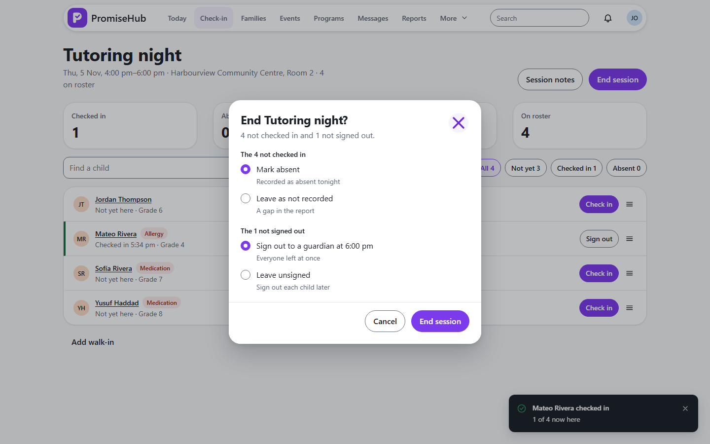
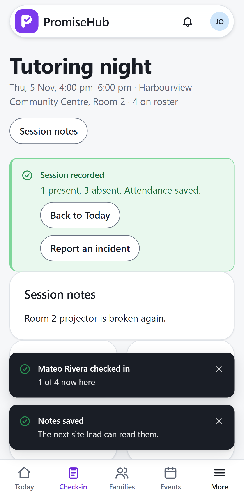

PromiseHub · Video 24
End a session
Two questions, then the record is closed
Two questions, then the record is closed
3 present, 1 absent, recorded.


| Case | Answer |
|---|---|
| Check-in after the end | 422, session has ended |
| End twice | 409 |
| Notes after the end | 204, saved |
| Another organization / Roll Call off | 404 |
Next: messaging families